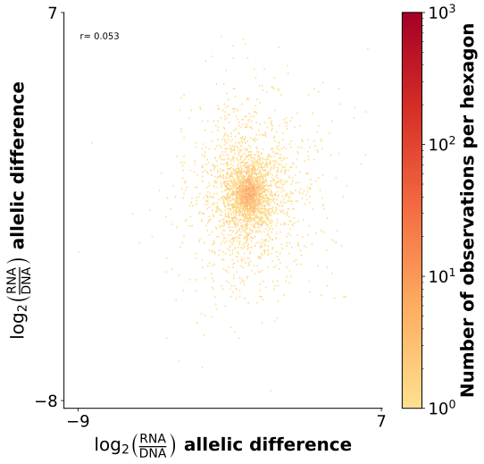
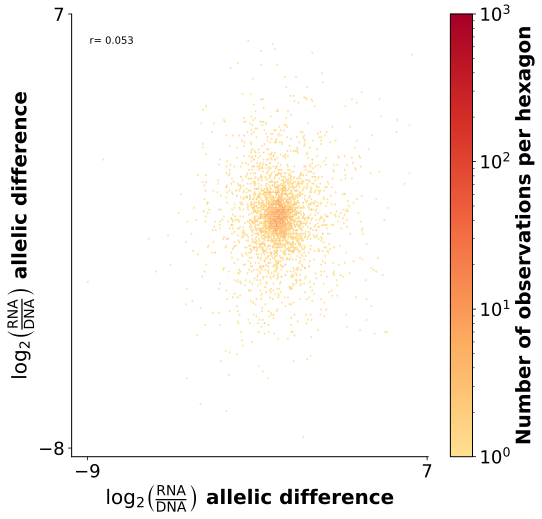

Chapter 3 Activity QC
3.1 Retained cCREs and barcodes
Goal: Assess cCRE and BC coverage
Input file: activity_per_rep
Evaluated metrics: DNA Complexity, RNA Complexity


Legend: Percentage of cCREs and BCs present in the DNA and RNA quantification data compared with those observed in the association data
Interpretation: The successful example showcases high retention of BCs and cCREs in both RNA and DNA data. The unsuccessful example showcases low retention, particularly of DNA BCs
3.2 DNA counts vs GC content
Goal: Assess GC content bias in PCR amplification
Input file: oligo_fasta, comb_df
Evaluated metrics: DNA Complexity


Legend: Each figure includes two panels with a shared x-axis showing binned GC content. The box plots showcase the number of DNA reads per cCRE. The histogram showcases the number of cCREs in each GC content bin. Data was binned in fixed sizes of 5%.
Interpretation: In the successful example, read counts are relatively consistent across GC content, indicating PCR conditions well matched to the GC composition of most cCREs, as reflected by closely aligned peaks. The unsuccessful example showcases pronounced amplification bias and PCR conditions that are poorly optimized for the GC content of the majority of cCREs.
3.3 Activity statistic vs count ratio
Goal: Assess the correlation between log2(RNA/DNA) and the summary statistic of activity
Input file: comb_df
Evaluated metrics: DNA Complexity, RNA Complexity


Legend: A scatter plot of raw actviity values x-axis vs the activity summary statistic. Colors show density.
Interpretation: The successful example showcases an experiment with high complexity, reflected in the high correlation between the measurements. The unsuccessful example showcases an experiment with a relatively low correlation between measurements, suggesting low complexity
3.4 Activity distribution
Goal: Assess activity dynamic range, noise, and statistical power
Input file: comb_df
Evaluated metrics: DNA Complexity, RNA Complexity:


Legend: A histogram of log2(RNA/DNA) of the tested cCREs, with significantly active cCREs marked in red.
Interpretation: The successful example showcases a broad dynamic range, with most of the highly active cCREs detected as significantly active. The 1st unsuccessful example showcases a problem in the detection of activity, either because of high noise levels or the experiment being underpowered. The 2nd unsuccessful example showcases silencing, with cCREs that are unlikely to be truly active detected as significantly active
3.5 Differential activity distribution
Goal: Assess differential activity dynamic range, noise, and statistical power
Input file: comparative_df
Evaluated metrics: DNA Complexity, RNA Complexity


Legend: A histogram of the log2(RNA/DNA) difference between the two alleles of a cCRE, with significantly differentially active cCREs marked in red.
Interpretation: The successful example showcases a broad dynamic range of differential activity, with high fold-changes detected as significantly differential active. The unsuccessful example showcases underdetection of differential activity or high noise levels.
3.6 P-value distribution
Goal: Assess statistical power
Input file: comb_df
Evaluated metrics: DNA Complexity, RNA Complexity, Reproducibility, Dynamic range


Legend: A qq plot of the p-values assigned to each cCRE activity level compared to the expected p-values generated by a uniform distribution
Interpretation: The successful example showcases sufficient statistical power, reflected in a downward deviation from the expected distribution, with many low p-values. The unsuccessful example showcases an upward deviation, reflecting an inflation of p-values.
3.7 Volcano plot - FC vs Pval
Goal: Assess statistical power of differential activity detection
Input file: comparative_df
Evaluated metrics: DNA Complexity, RNA Complexity


Legend: A volcano plot of logFC vs FDR. Dashed line shows FDR = 0.05.
Interpretation: The successful example showcases sufficient statistical power to detect differential activity. cCRES with large absolute(logFC) are detected as differentially active. The unsuccessful example showcases many cCREs with relatively large absolute(logFC) that are not detected as differentially active, suggesting low power or high noise levels.
3.8 BC retention by DNA/RNA sequencing depth
Goal: Assess whether sequencing depth is sufficient
Input file: downsampling_ratio_path
Evaluated metrics: DNA Complexity, RNA Complexity


Legend: The relationship between sequencing depth and the percentage of retained BCs. Data is downsampled in order to assess whether we have reached saturation in the percentage of retained BCs. Then, data is extrapolated to predict whether additional sequencing would help improve the results.
Interpretation: The successful example showcases sufficient sequencing depth, The baseline percentage is relatively high and additional sequencing doesn’t improve the percentage of retained BCs significantly. The unsuccessful example showcases an experiment with a low percentage of retained BCs and more sequencing increases significantly coverage suggesting additional sequencing is required
3.9 cCRE retention by DNA/RNA sequencing depth
Goal: Assess whether sequencing depth is sufficient
Input file: downsampling_ratio_path
Evaluated metrics: DNA Complexity, RNA Complexity


Legend: A line plot that exhibits the effect of sequencing depth (x axis) on the percentage of retained cCREs (y axis). Sampling values higher than 1 represent predicted data points
Interpretation: The successful example showcases sufficient sequencing depth, The baseline percentage is relatively high and additional sequencing doesn’t improve the percentage of retained cCREs significantly. The unsuccessful example showcases an experiment with a low percentage of retained cCREs and more sequencing increases significantly coverage suggesting additional sequencing is required
3.10 Activity by sequencing depth
Goal: Assess if sequencing depth is sufficient
Input file: downsampling_activity_path
Evaluated metrics: DNA Complexity, RNA Complexity


Legend: The relationship between sequencing depth and the percentage of active cCREs. Data is downsampled in order to assess whether we have reached saturation in the percentage of active cCREs. Then, data is extrapolated to predict whether additional sequencing would help improve the results.
Interpretation: The successful example showcases sufficient sequencing depth: the percentage of active cCREs has reached a plateau, and more sequencing is not expected to affect it. The unsuccessful example showcases suboptimal RNA sequencing depth: additional sequencing will likely affect the percentage of active cCREs.
3.11 Cumulative RNA reads
Goal: Assess jackpotting
Input file: comb_df
Evaluated metrics: RNA Complexity, Dynamic range


Legend: A cumulative distribution showcasing the fraction of RNA reads from each cCRE. cCREs are sorted by their RNA read counts.
Interpretation: The successful example showcases no jackpotting – the RNA reads come from many cCREs. The unsuccessful example showcases an experiment where most of the RNA reads come from just a few cCREs.
3.12 Sample clustering
Goal: Assess reproducibility between samples
Input file: cDNA_reads_by_cell_type
Evaluated metrics: Reproducibility


Legend: Principal component analysis (PCA) on the activity of cCREs in replicates from two cell lines.
Interpretation: In the successful example, PC1 separates between cell types. In the unsuccessful example, variation between replicates is as large as that between cell types, and one of the replicates of cell type 2 clusters closely with cell type 1.
3.13 Correlation between replicates
Goal: Assess reproducibility between replicates
Input file: activity_per_rep
Evaluated metrics: Reproducibility, Dynamic range


Legend: Scatter plot of the log2(RNA/DNA) values of each cCRE across two experimental replicates. Each data point is a hexagon representing the local density of cCREs.
Interpretation: The successful example showcases a high correlation between replicates in more active cCREs. The unsuccessful example showcases no correlation
3.14 Correlation of differential activity between replicates
Goal: Assess reproducibility between replicates
Input file: allelic_pairs_replicates_df
Evaluated metrics: Reproducibility, Dynamic range
 

Legend: Scatter plot of the log2(RNA/DNA) allelic difference values for each cCRE in two replicates. Each data point is a hexagon representing the local density of cCREs.
Interpretation: The successful example showcases concordance in differential activity between repliactes. The unsuccessful example showcases little concordance.
3.15 Replicability by activity
Goal: Assess the correlation in activity between replicates in active vs non-active cCREs
Input file: activity_per_rep
Evaluated metrics: Reproducibility


Legend: Correlation between replicates as a function of average activity [log₂(RNA/DNA)], shown across fixed bins of width 1.
Interpretation: In the successful example, more active cCREs showcase a higher correlation, which further improves with higher activity level. The unsuccessful example showcases a low correlation, which remains poor in active cCREs.
3.16 Correlation between replicates (controls)
Goal: Assess reproducibility between replicates in positive and negative controls
Input file: comb_df
Evaluated metrics: Reproducibility, Dynamic range


Legend: Scatter plot of the log2(RNA/DNA) values of each cCRE across two experimental replicates. Positive controls are marked in green, and negative controls are marked in red.
Interpretation: The successful example showcases a high correlation between positive controls and a low correlation between negative controls. The unsuccessful example showcases low correlations in both.
3.17 Cross-validation: allelic pairs
Goal: Assess reproducibility between allelic pairs
Input file: allelic_pairs_df
Evaluated metrics: Reproducibility


Legend: Log2(RNA/DNA) values of the two alleles of a cCRE. Each data point is a hexagon representing the local density of cCREs.
Interpretation: When allelic pairs differ by only a few nucleotides, their regulatory activity should be highly correlated. The successful example showcases a strong correlation between allelic pairs. The unsuccessful example showcases little to no correlation.
3.18 Cross-validaiton: cell types
Goal: Assess reproducibility between different cell types
Input file: cell_types_df
Evaluated metrics: Reproducibility

Legend: Log2(RNA/DNA) values of shared control sequences across two cell types. Each data point is a hexagon representing the local density of cCREs.
Interpretation: Although cell types differ in their trans environments, many regulatory networks are shared, particularly between closely related cell types. As a result, regulatory sequences often exhibit similar activity across cell types. This pattern is evident in the successful example, which shows a strong correlation between cell types. The unsuccessful example, on the other hand, showcases no correlation.
3.19 Minimizing noise
Goal: Remove outlier barcodes and optimize minimum DNA count threshold to improve reproducibility
Input file: different_std_threshold_analysis
Evaluated metrics: Reproducibility
 Legend: Each panel shows the correlation between replicates across different threshold of outlier removal (horizontal), and minimum DNA counts per cCRE (vertical). Each data point is a hexagon representing the local density of cCREs.
Legend: Each panel shows the correlation between replicates across different threshold of outlier removal (horizontal), and minimum DNA counts per cCRE (vertical). Each data point is a hexagon representing the local density of cCREs.
Interpretation: The examples show an increase in correlations between replicates with increasing DNA cutoffs and outlier BC removal
3.20 Reproducibility by sequencing depth
Goal: Assess whether additional sequencing will improve reproducibility between replicates
Input file: downsampling_activity_path, downsampling_ratio_path
Evaluated metrics: Reproducibility


Legend: The correlation between replicates as a function of the sequencing depth. The x-axis shows increasing levels of downsampling of the current data.
Interpretation: In the successful example, additional sequencing is expected to slightly improve reproducibility, whereas in the unsuccessful example it is not.
3.21 RNA vs DNA
Goal: Assess true activity in the experiment
Input file: comb_df
Evaluated metrics: Dynamic Range


Legend: RNA vs. DNA counts for each cCRE, normalized to sequencing depth. Each data point is a hexagon representing the local density of cCREs.
Interpretation: The successful example showcases many sequences with high RNA-to-DNA ratios, reflected by points above the diagonal. The 1st unsuccessful example showcases little to no activity, with points clustering along the diagonal, and the 2nd unsuccessful example showcases silencing, reflected by many points falling below the diagonal.
3.22 Activity of controls
Goal: Assess the dynamic range of activity
Input file: comb_df
Evaluated metrics: Dynamic Range


Legend: Box plots of activity levels for positive and negative controls, as well as cCREs.
Interpretation: In the successful example, positive controls show high activity while negative controls show low activity. The unsuccessful example shows similar activity levels for positive and negative controls.
3.23 Genomic annotations
Goal: Assess concordance with endogenous signals of active chromatin marks
Input file: screen_df
Evaluated metrics: Concordance with endogenous signals


Legend: A stacked bar plot of cCRE overlap with active chromatin marks (ENCODE SCREEN elements). cCREs were grouped into six groups based on their activity levels.
Interpretation: The successful example showcases increased overlap with active chromatin marks as activity increases. The unsuccessful example shows no such increase
3.24 Proximity to TSS
Goal: Assess concordance with endogenous locations of cCREs
Input file: tss_df
Evaluated metrics: Concordance with endogenous signals


Legend: Box plots of cCRE distance to the closest TSS. cCREs were grouped into six groups based on their activity levels.
Interpretation: The successful example showcases that more active cCREs tend to be closer to a TSS. The unsuccessful example shows no such trend
3.25 AI predictions vs activity
Goal: Assess the correlation between AI predictions of activity and MPRA results
Input file: AI_df
Evaluated metrics: Concordance with endogenous signals


Legend: Experimentally measured activity vs AI-predicted activity. Each data point is a hexagon representing the local density of cCREs.
Interpretation: The successful example showcases a high correlation, and the unsuccessful example showcases little correlation
3.26 AI predictions vs differential activity
Goal: Assess the correlation between AI predictions of differential activity and MPRA results
Input file: AI_comparative_df
Evaluated metrics: Concordance with endogenous signals


Legend: Experimentally measured differential activity vs AI-predicted differential activity. Each data point is a hexagon representing the local density of cCREs.
Interpretation: The successful example showcases some correlation, and the unsuccessful example showcases no correlation.